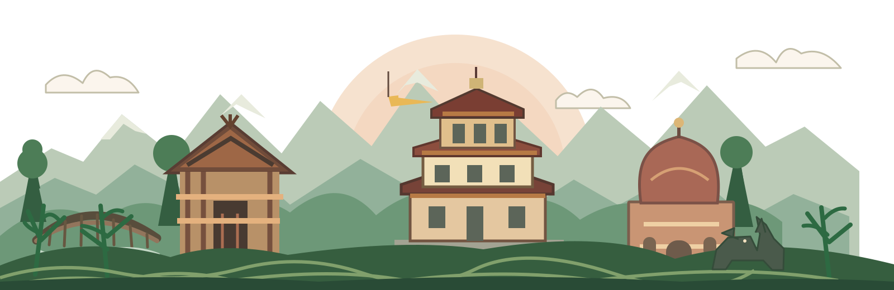

Local Travel Knowledge
Travel planning shaped around real places and people.
Explore the hills, living cultures and beautiful trails of North-East India, one honest trip at a time.
Start Exploring➜KAPAMODZU · NAGALAND ↗Travel planning shaped around real places and people.
Treks, culture and weekends that fit your pace.
Clear details and a real person to speak with.
Ask questions and plan the details before you go.
 EXPLORE
EXPLOREGreen hills and trails across Dzukou Valley
 EXPLORE
EXPLOREFestival and village culture experiences
 EXPLORE
EXPLOREWildflowers and beautiful hill views

A valley of rolling hills and quiet trails.
⌖ Nagaland, India

Real people. Real memories. We'll share their words here with permission.
Reviews will appear with each traveler's permission.
From wildflower trails to living villages, the North-East is waiting.
Begin Your Journey➜